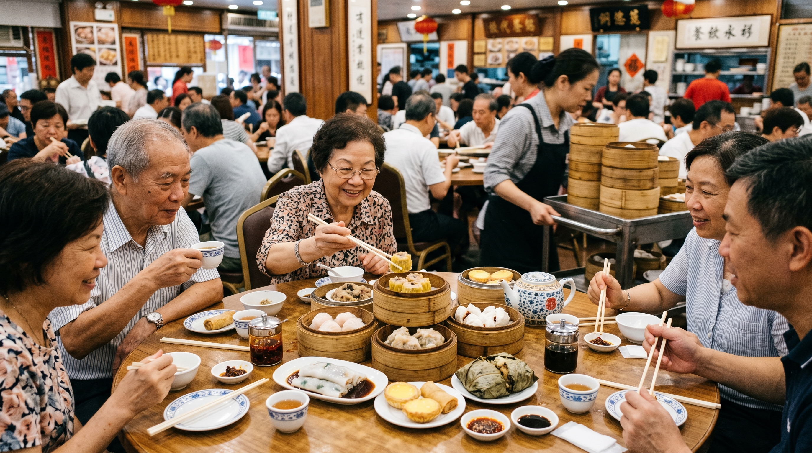
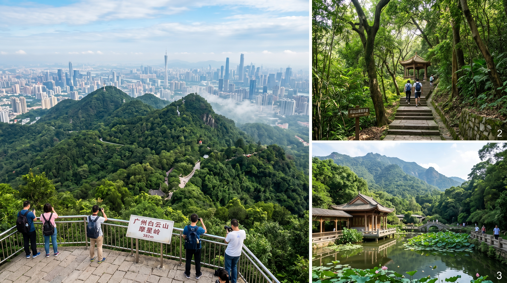
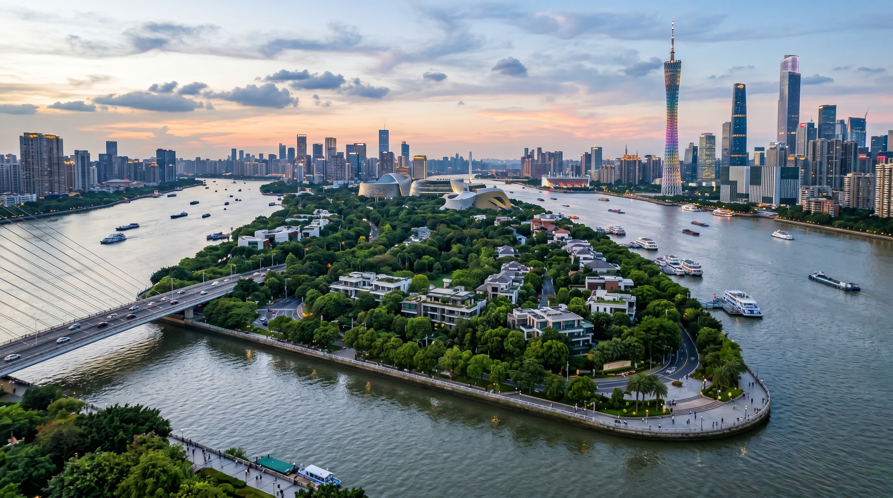

Every time my friends come to Guangzhou to visit me on the weekend, I always want them to have the best possible time and leave with zero regrets. After hosting many friends, I’ve finally perfected this 2-day Guangzhou itinerary. Everyone who has followed it says it’s fantastic! It has now become my go-to route whenever friends come to town.
This is a super practical, fun, and relaxing Guangzhou 2-day trip that mixes the best local food, historic sights, beautiful photo spots, and classic attractions. I’m sharing all the honest details so you can enjoy Guangzhou just like a local!
Day 1: Classic Old Guangzhou + Pearl River Vibes
Start Your Day with Authentic Cantonese Dim Sum (Yum Cha)

Most people want to experience real Cantonese morning tea when they visit Guangzhou. But if you sleep in like we usually do, don’t worry — we just turn it into a relaxed lunch tea instead!
I used to recommend Silver Lamp Restaurant inside Guangzhou Hotel, but unfortunately it closed last year. Great alternatives are Tao Tao Ju or Dian Du De. Both have many branches across the city — just pick the one closest to your hotel. The atmosphere is lively, the food is consistently excellent, and you’ll feel the real local Guangzhou vibe.
Recommended: Crystal Chicken Feet, shrimp dumplings, char siu buns, and egg tarts. Expect to spend around 60-80 RMB per person.
Next Stop: Sacred Heart Cathedral (Stone Room Sacred Heart Cathedral)
Just a short walk from Haizhu Square Metro Station (Line 2, Exit B2). This is Guangzhou’s largest Gothic-style church, often called the “Notre-Dame of the Far East.” The stunning architecture with its tall spires and beautiful stained glass is absolutely worth visiting. It’s free to enter and perfect for photos.
Then: Shamian Island
Only 10-15 minutes walking from the Cathedral. Shamian Island is one of the most beautiful and photogenic places in Guangzhou. You’ll find over 150 European-style historic buildings from the 19th century, tree-lined streets, cafes, parks, and a relaxing European atmosphere. It’s completely free to wander around. Great spot for taking tons of photos with friends!
Afternoon Food Adventure on Civilized Road (Wenming Road)

Metro Line 1 to Nongjiang Suo Station (Exit A). This area is full of real local Guangzhou life — traditional Qilou buildings, herbal tea shops, roasted meats, claypot rice, and slow-cooked soups.
Must-try dishes:
- Jiu Ye Chicken — incredibly flavorful and juicy
- Da Yang Original Stewed Soup — especially coconut stewed black chicken
- Bai Hua Sweet Shop — 30-year-old famous dessert place
Head to Zhujiang New Town. Flower City Square offers the best panoramic views of the Canton Tower (Little Waist). It’s the perfect place to take beautiful photos.
Depart from Tianzi Wharf (easy to reach from Beijing Road or Haizhu Square area). The night cruise is absolutely stunning with all the lights along the river and the illuminated Canton Tower. There are many departure points, but Tianzi Wharf is very convenient.
Day 2: Traditional Lingnan Culture & Relaxing Parks
Breakfast + Chen Clan Ancestral Hall

Start the morning with classic Guangzhou breakfast — try wonton noodles at Yi Ji or rice noodle rolls at Yin Ji or Hua Hui. They are all very popular with locals.
Take Metro Line 1 and get off directly at Chen Clan Ancestral Hall Station. This is one of the most beautiful and well-preserved Lingnan-style ancestral halls in Guangdong. With over 120 years of history, it’s known as the “Pearl of Lingnan Architectural Art” because of its incredibly detailed carvings and decorations. You will be amazed by the craftsmanship.
Final Stop: Yuexiu Park

Metro Line 2 to Yuexiu Park Station. Yuexiu Park is Guangzhou’s largest comprehensive park and one of the traditional Eight Sights of Yangcheng. It’s a great place to stroll around, enjoy nature, see the famous Five Rams Statue (which explains why Guangzhou is called “City of Rams”), and visit Zhenhai Tower for nice views over the city.
Departure Tip: From Yuexiu Park, it’s very convenient to go straight to Guangzhou South Station via Line 2. Grab a good meal nearby before your train or flight so your friends don’t get hungry on the way back!
Guangzhou Must-Try Foods on This Trip
• Classic Dim Sum & Yum Cha at Tao Tao Ju or Dian Du De
• Jiu Ye Chicken on Civilized Road
• Coconut Stewed Chicken Soup at Da Yang
• Wonton Noodles and Fresh Rice Rolls
• Traditional Cantonese Desserts
Best Area to Stay in Guangzhou for This Itinerary
Recommended Location: Beijing Road, Shangxiajiu, or Taojin Area
These central locations are super convenient for both days of this itinerary. My personal recommendation for friends is the Orange Crystal Hotel Guangzhou Taojin. It’s close to many attractions, surrounded by great local restaurants, located in a lively old Guangzhou neighborhood, and has good metro access. The price is also reasonable.
Pro Tip: Choose a hotel near Line 1 or Line 2 metro stations to make your trip even smoother.